Overview
In this project, we implemented a simple rasterizer. A rasterizer is a method of displaying an image on a raster, or in our case a matrix/grid of pixels. As part of this project, submethods we completed included drawing triangles (triangle-based rasterization), hierarchical transforms (i.e. affine), as well as texture mapping. We also implemented functionality to scale sampling rate and mipmap level (more on this later). At a high-level, input is a simplified SVG (Scalable Vector Graphics File) and output the rendered image.
Section I: Rasterization
Part 1: Rasterizing single-color triangles
Methodology
Rasterizing single-color triangles consists of two parts: 1) Identifying which pixels in the raster are in the triangle using the point-in-triangle test and 2) filling the respective pixels with the single-color. The point-in-triangle test breaks down into 3 line-tests, checking if the point being tested in inside of the 3 vertices of the triangle. This can be done by plugging in the point into Li(x, y) = -(x-Xi)dYi + (y-Yi)dXi and ensuring that Li is > 0 for all 3 lines. We must also check the reverse of each line since we don't know if the orientation is clockwise or counter-clockwise. It's also important to be testing the middle of each pixel (i.e. (x+0.5, y+0.5)) when performing these pixel-in-triangle tests. Finally, to fill the pixel we set the color of the respective pixel in the sample buffer. See sample result below.

Runtime
The runtime of the simple single-color triangle rasterization was no more than the bounding box of the triangle. This is because we tested the center of every pixel contained in the bounding box of the triangle (i.e. points "inside" the triangle's vertices).
Here is an example 2x2 gridlike structure using an HTML table. Each tr is a row and each td is a column in that row. You might find this useful for framing and showing your result images in an organized fashion.
Part 2: Antialiasing triangles
Supersampling Algorithm
Our supersampling algorithm looks at a grid of sqrt(sample_size) by sqrt(sample_size) points within each pixel. Effectively, we sample a total of sample_size points per pixel to see if they are within the triangle. Similarly for Rastering Triangles, we only check pixels within the bounding box of the triangle. However, for supersampling we also look at one extra layer of pixels (width + 1, height + 1) for the bounding box for pixels that may be partially within the triangle. For each sampling, we record pixel colors in our sample buffer. Once all triangles are. supersampled and rasterized, we resolve the sample buffer onto the final data structure (buffer) that will be in the screen. To do this, we average the supersamples for each pixel to get the final color for that pixel.
Sample Results
Below we can see the effects of using different supersampling rates on a thin portion of the pink triangle. These super skinny corners are prone to aliasing, requiring supersampling to result in a high quality raster. We can see that in the leftmost image, with sample rate of 1/pixel, we have a break in the corner/aliasing. With the 4/pixel rate image, we can see more of an attempt to blur the corner and average the discontinuities in order to antialias. Finally with the 16/pixel image on the right, we can see strong antialiasing with a very averaged corner values, resulting in a smoother raster/corner boundaries.
|
|
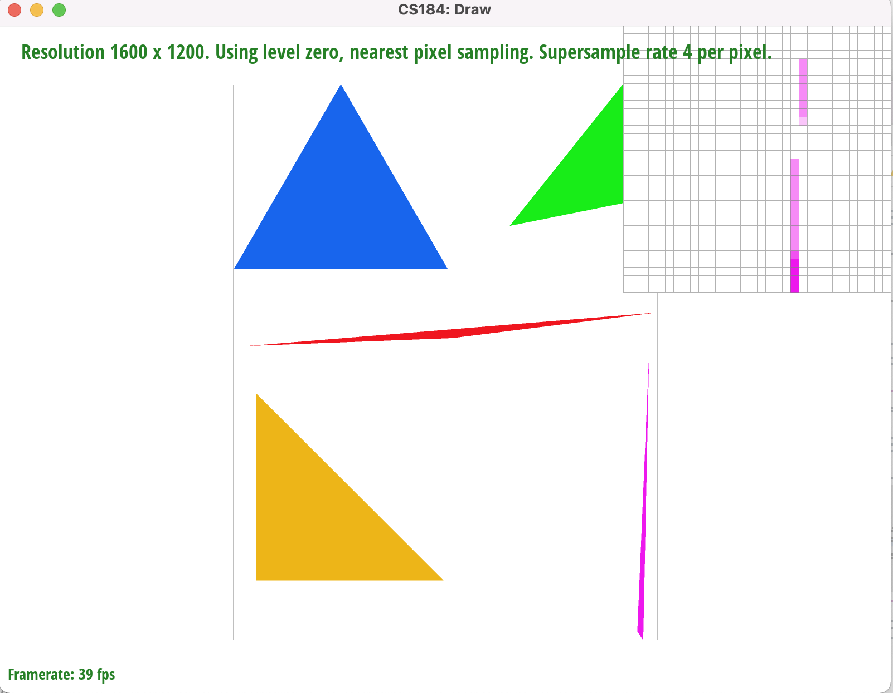
|
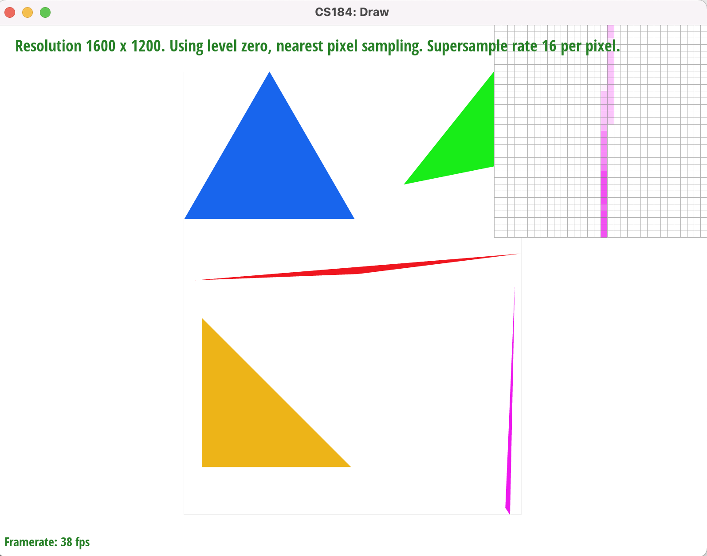
|
Part 3: Transforms
See result below. We attempted to make the robot man wave through rotating his arm joints.
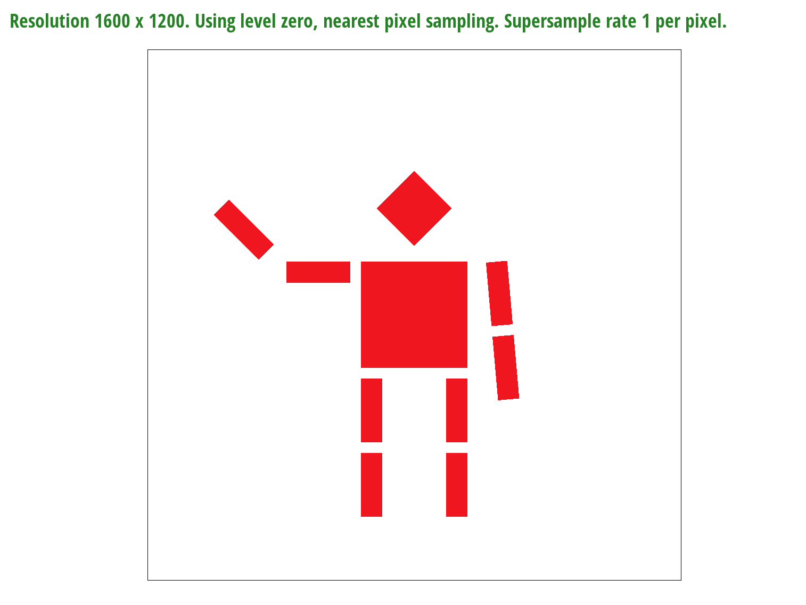Section II: Sampling
Part 4: Barycentric coordinates
Explaining Barycentric Coordinates
Barycentric Coordinates help orient us based on the position of a point relative to a triangle. Barycentric coordinates are represented by three numbers that sum to 1: alpha, beta, and gamma, which correspond to vertices A, B and C of the triangle. These coordinates each represent the proportion of the point that is represented by each vertex. Sample results shown below.
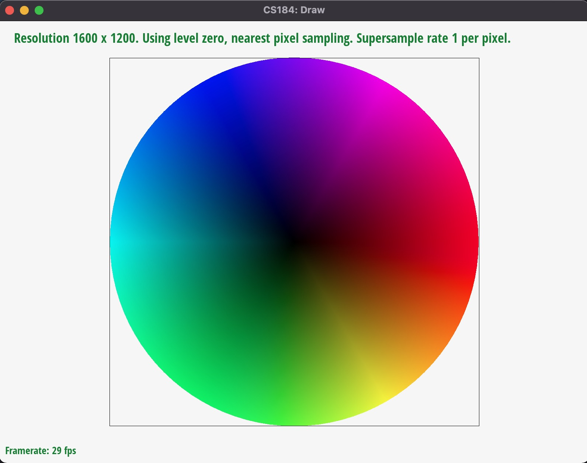 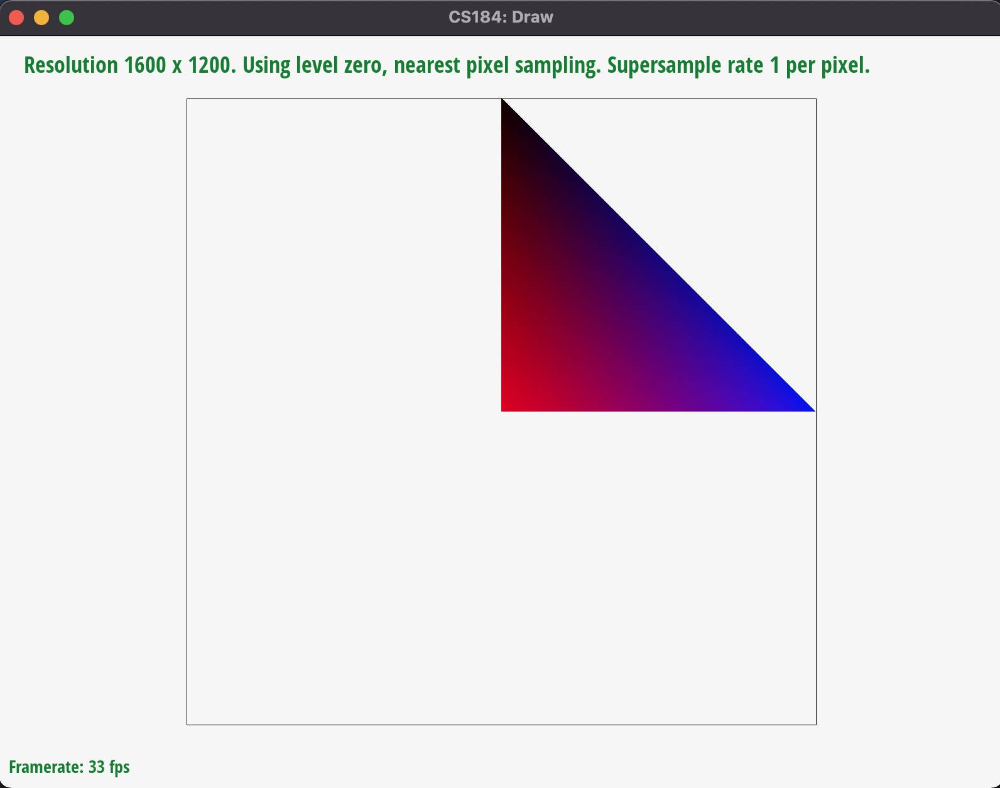Part 5: "Pixel sampling" for texture mapping
Pixel sampling for texture mapping is when we sample the color for each pixel based on it's corresponding texel in the texture image. A pixel starts with coordinates (x, y), while a texel would have corresponding coordinates (u, v). In order to get the colors for each pixel, we sample the texel coordinates by first converting the pixel coordinates to barycentric coordinates, and then using the matching XY and UV vertices to compute texel coordinates. Once we have the texel coordinates, we can sample the color from the texture image. The first was to do this is just to get the nearest texel, which is where the point resides in. The other way is bilinear where we look at the four closest texels and bilinearly interpolate the colors to get a weighted average.
Sample Results
Below we can see the difference between bilinear and nearest pixel sampling on the world map example. With the nearest pixel sampling method, we can see aliasing at 1/pixel sampling rate with the thin lines on top of high sd texture areas (the equator lines). Even with a higher sampling rate of 16/pixel we can see some effects of aliasing although the discontinuous portions of the line are mostly gone. On the other hand, with bilinear sampling, we can see a mostly smooth line boundary even at 1/pixel sampling rate, and at 16/pixel we see little to no effects of aliasing. This is due to the earlier explained fact that bilinear sampling uses the 4 nearest neighbor and therefore results in more averaged/smoothed texture/color values. Generally, when there are areas of high sd in color/texture (i.e. thin borders on top of a densely colored map) where averaging is critical to avoid aliasing effects, bilinear sampling performs better than nearest pixel.
|
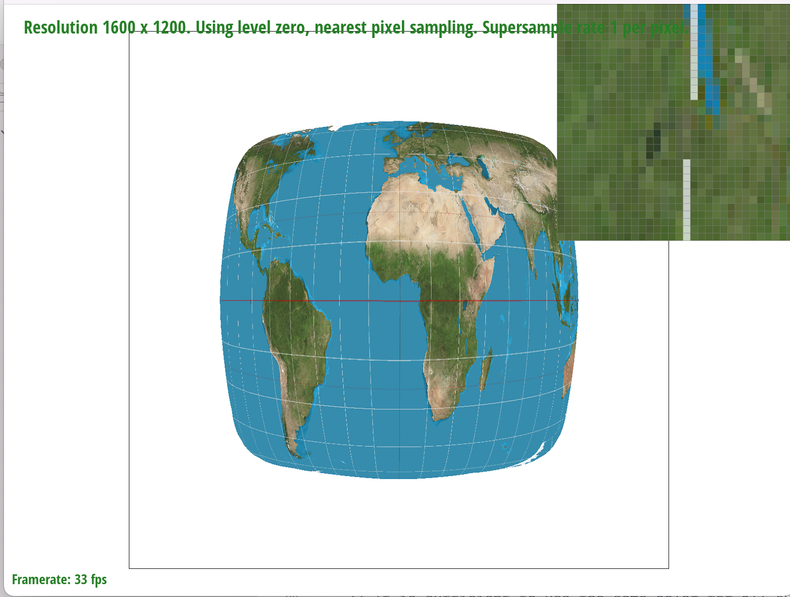
|
|
|
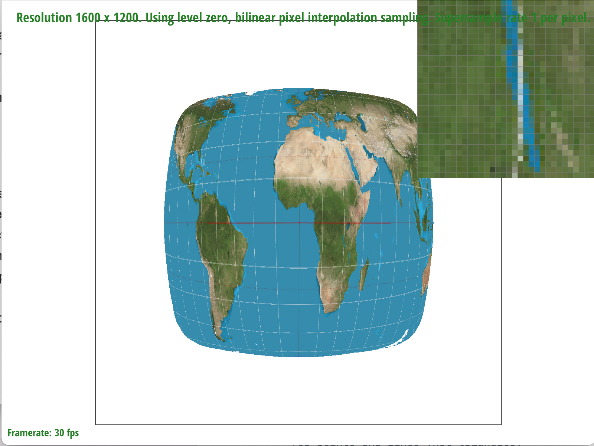
|
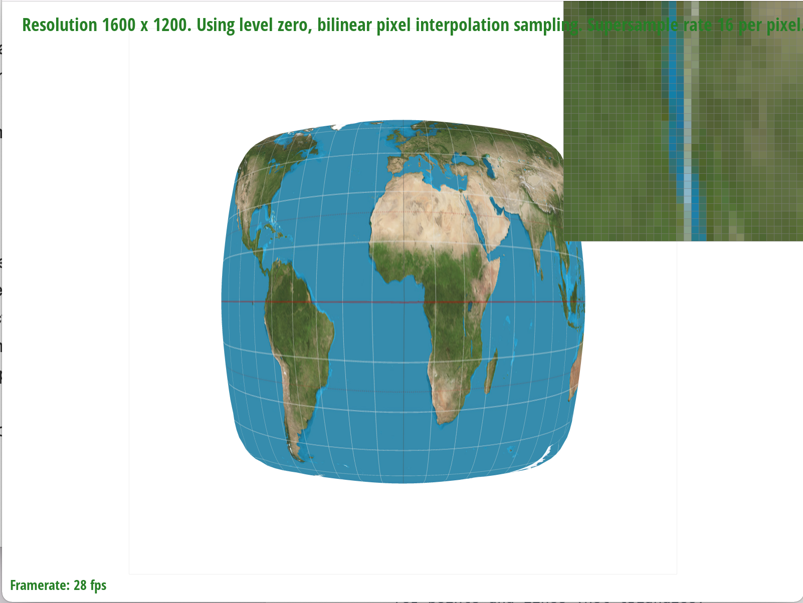
|
Part 6: "Level sampling" with mipmaps for texture mapping
Level sampling is when we want to find what level of resolution to use for sampling the texture texel corresponding to a pixel. When a pixel is far away, we tend to want to use a mipmap with lower resolution. If it is very close, we would use the high resolution mipmap at level 0. To determine which level to use, we look at two pixels next to the target pixel. Depending on how far away the neighboring pixels are to the target pixels, we would have a higher or lower level for resolution.
Tradeoffs
Generally, bilinear sampling for both level and pixel helps to combat aliasing by averaging values. However, it requires more computation per pixel than for nearest pixel. Increasing the number of samples reduces aliasing by averaging values and checking within pixels. However, computation cost and memory usage both scale multiplicatively with number of samples. Thus, it will take longer to run and use more memory.
|
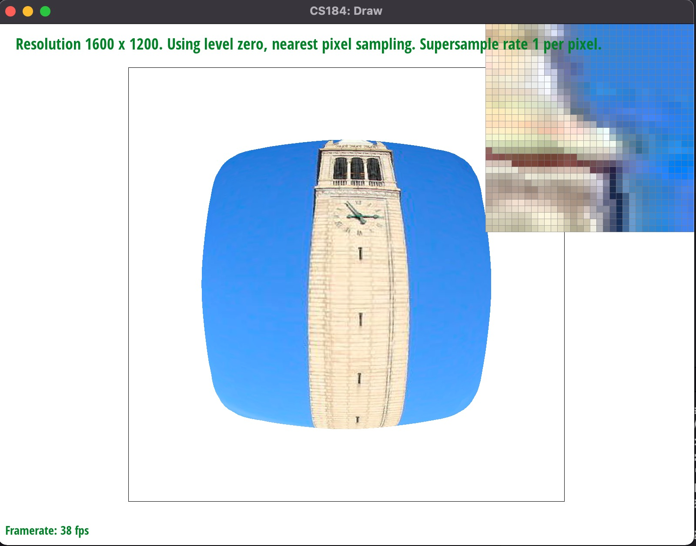
|
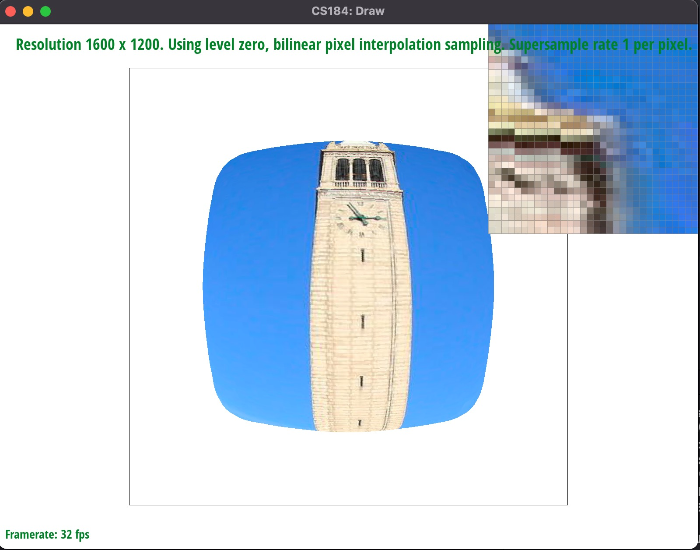
|
|
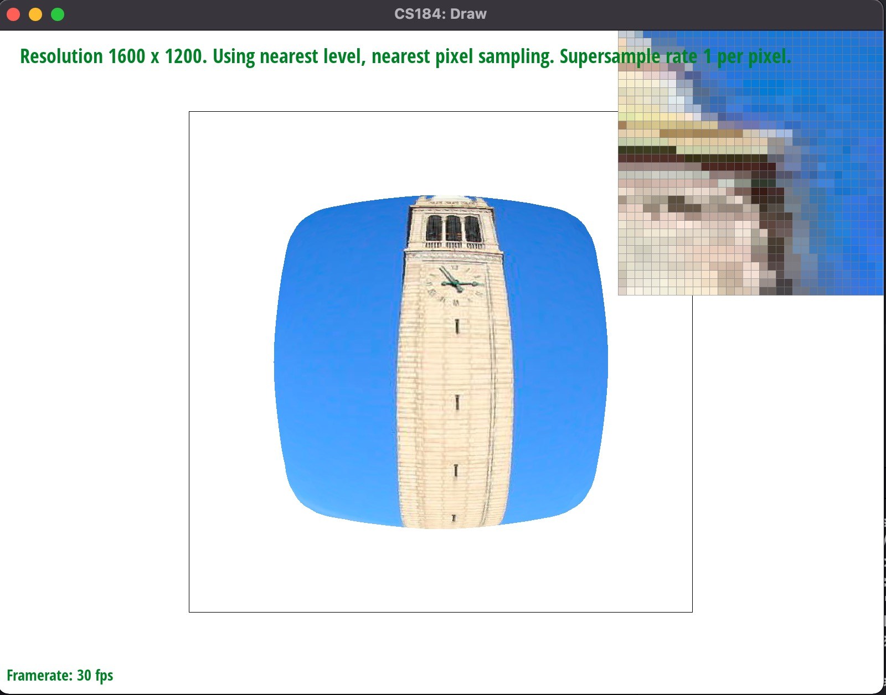
|

|
Section III: Art Competition
If you are not participating in the optional art competition, don't worry about this section!